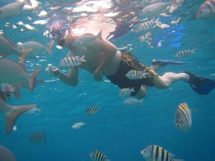
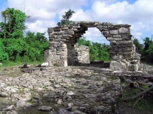

3 of the Best Places of Cozumel You Need to Visit
Chankanaab
Chankanaab is one of the most popular natural aquariums in Cozumel. This aquarium is a lagoon that is part of the national reserve with the same name. In this amazing place, you can practice free diving - without a tank - or sport diving in complete safety. Its reefs are home to very striking fish colonies, and in its sandy bed the remains of some sunken ships.
Atlantis Submarine

One of the most fun tours you can do in Cozumel is aboard the Atlantis Submarine, this submarine sails 30 meters deep and through the island's reefs. The duration of each tour us approximately two hours.
San Gervasio
Cozumel has more than ten registered pre-Columbian Mayan culture archaeological sites. Unfortunately not all are open to the public. The most important is San Gervasio. This site was a place for the Mayan goddess of fertility, Ix Chel. San Gervasio is located in a protected park.The tourist visit of the site takes approximately three hours and a total distance of about 3 km.
Playa del Carmen Cozumel-Ferry Dock
Av. Rafael E. Melgar, Centro, 77600 San Miguel de Cozumel, Q.R.
scoots.ferry@gmail.com
(01) 987-100-27-55
Terminal Puerta Maya
Carretera Chankanaab km 4.5, Carretera Costera Sur, 77600 San Miguel de Cozumel, Q.R.
scoots.puertam@gmail.com
(01) 987-100-27-56